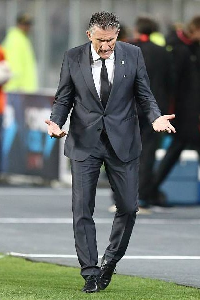
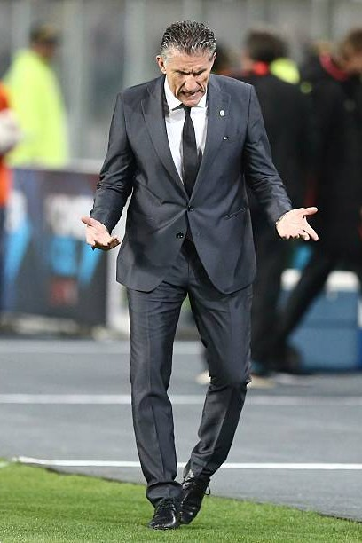

Estadisticas
Antes de la llegada de Lionel Scaloni en 2018, la selección argentina experimentó una etapa de inestabilidad tanto en el rendimiento como en la dirección técnica. A continuación, se detallan las estadísticas y el desempeño del equipo en los años previos. Durante (2011-2018), Argentina fue dirigida por varios entrenadores:
Alejandro Sabella (2011–2014): 41 partidos, 26 victorias, 10 empates, 5 derrotas. Efectividad: 71,54%.
Gerardo Martino (2014–2016): 29 partidos, 19 victorias, 7 empates, 3 derrotas. Efectividad: 73,56%.
Edgardo Bauza (2016–2017): 8 partidos, 3 victorias, 2 empates, 3 derrotas. Efectividad: 45%.
Jorge Sampaoli (2017–2018): 15 partidos, 7 victorias, 4 empates, 4 derrotas. Efectividad: 55,55%
 

Los registros de Lionel Scaloni en la Selección Argentin
Desde su debut en septiembre de 2018, en un amistoso ante Guatemala en Los Ángeles, el oriundo de Pujato comandó en 85 partidos a Argentina. Encadenó el mayor invicto en la historia del seleccionado, con 36 encuentros en fila sin caídas, racha que se estancó a un partido del récord histórico del fútbol mundial (37, de Italia). Pero gran parte de su legado, escrito con Lionel Messi como gran figura, se debe a los títulos que consiguió: las Copas América de 2021 y 2024, la Finalissima de 2022 y la Copa del Mundo de 2022, un título que a Argentina se le negaba desde 1986.
- 85 partidos
- 60 triunfos
- 17 empates
- 8 derrotas
- 165 goles a favor
- 46 goles en contra
- 4 títulos
- (Mundial 2022, Copas América 2021 y 2014, Finalissima 2022)
Estadisticas Entre Sub20 y Mayor